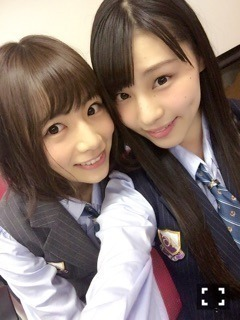

| 2016/06 09 Thu | 前を向いてますよ_(．．*)vol.92 |
みなさんこんばんはー！
相楽伊織です！
15枚目アンダーとして頑張ります！
んー、なんだろ
いつの間にか
｢選抜に選ばれるように頑張ってね！｣
って言われなくなってました。
ファンの皆さんの
優しさかも知れないし、
単純に可能性が低いからかも知れないけど
ずっと悔しい思いをしてました。
でもそれを行動で示す事は無く、
アンダーメンバーになって1年
何もせずに過ごしてきて
周りの変化をただ見てるだけで
私は立ち止まったままでした。
だから
今年は色々な意味で
変化の年にしたいな(^^)
私ももう社会人！
負けてられない！！！
もうすぐ
活動始めて3年
初期の頃は右も左も分からずで
戸惑ってばかりだったけど
今はもう何も怖くない！
アルバムの握手会から
2部制になったけど、
それも戻っただけであって
前に進めたわけではないし、
今までは
｢何を頑張ったらいいか分からない｣って
思ってたけど、
ちゃんと自分自身を見つめたら
やってない事だらけで、、
そういう一つ一つを
もう一度頑張ってみようって思いました！
今応援してくださっている方や
これから応援してくれる皆さんに
私の推しメンは
｢相楽伊織ちゃんだよ！｣って
堂々と言わせたい！
だから
もっと顔がよく見える位置に
つけるようにもっともっと頑張ります＞＜
日奈子、ひめかさん
選抜おめでとうございます(^^)
飛鳥ちゃんも
センターおめでとう♡

さて！
今日のまいちゅんのANN0の
モーニングコールのコーナー？で
少しだけ
お邪魔させてもらいました！
だけど、、
寝てましたぁ(｡･ω･｡)
へへ
でもその後
寝れなくなっちゃったから
しっかり聴いてたよ、
今度またコールされることがあったら
最初からちゃんと聞こうと思います♡
まいちゅん Thanks!
そして！！
楽天SHOWTIMEで
｢のぎ天｣が復活しますヾ(＠⌒ー⌒＠)ノ
うれしいー♡
またみんなの素顔が
たくさん見れると思うので
楽しみにしていてください♪♪
るんるん
寄り目苦手～
それからそれから
明日夜9時から46時間テレビが
配信されます(｀･ω･´)ﾉ
私が出る所は
忘れない限りメールでお知らせしますね！
みなさんも無理しない程度に
見て頂けたら嬉しいです♡
これからも
皆さんに頼ることが多いと思いますが、
一緒に楽しんで
過ごしていけたらなと思います♪♪
アルバム、15枚目も
よろしくお願いしますm(_ _)m
i o r i .

コメント(262)
2016/06/09 22:06